2011 GSDC of St Louis Royal Hecht Awards Ceremony and Dinner
This event was held on 2/24/2012
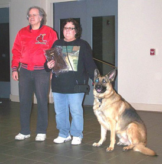 |
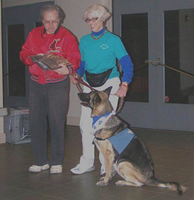 |
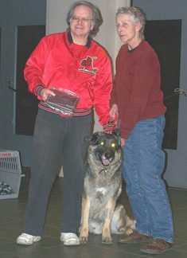 |
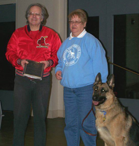 |
| Dannie and Rocky Therapy Dog & Canine Good Citizen Hero Dog Award |
Helen and Patra Faye Rally Novice and Beginner Novice Dual Title Award |
Judy and Rocket Therapy Dog International |
Geralyn and Chance Canine Good Citizen and Therapy Dog |
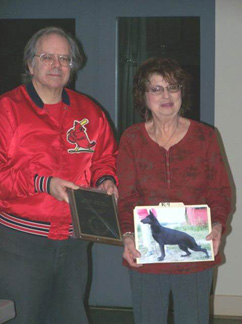 |
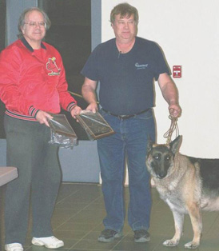 |
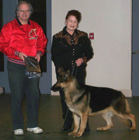 |
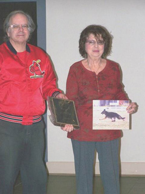 |
| Marilee and Phoenix GSDC of St Louis Best Puppy |
Steve and Butkus 2011 GSDC of StL Bred By Exhibitor Award 2011 Champion |
Roz and Rocky 2011 Champion |
Marilee and Minnie 2011 Champion |
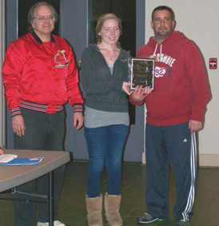 |
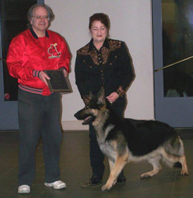 |
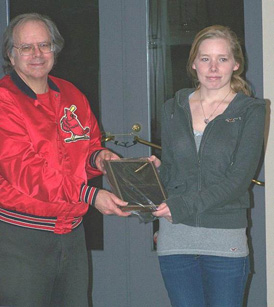 |
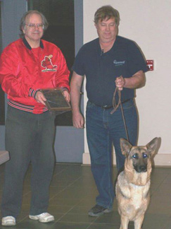 |
| Elizabeth, Greg and Dalton 2011 Champion |
Rosalind and Topper 2011 Champion |
Elizabeth and Peanut 2011 Champion |
Steve and Charmin 2011 Champion |
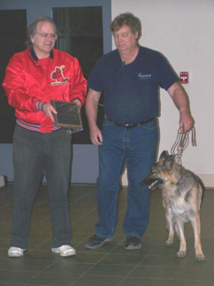 |
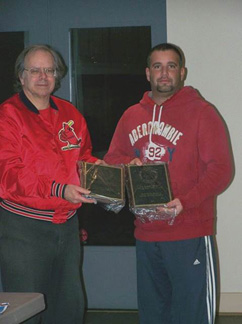 |
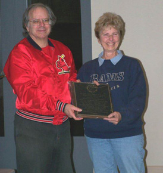 |
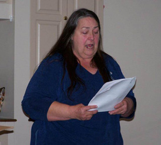 |
| Steve and Pinky 2011 Grand Champion |
Greg and Fletcher 2011 Select Dog #2 |
Karen and Koko 2011 Register of Merit |
Marcia Hadley Royal Hecht Awards Chair |